In Chapter 8, we used Lotka-Volterra models of competition and mutualism to learn about some fundamental properties of (-,-) and and (+,+) interactions. Here we add some model complexity to illustrate a more mechanistic approach to modeling greater biological reality.
In Chapter 10, on consumer-resource interactions, we learned a variety of approaches to representing different types of resources or prey, and different ways consumers consume them. Please read Chapter 10 before proceeding here. There are a lot of terms and parameters we use here that are more fully explained in Chapter 10.
13.1 Competition for one resource
Let’s imagine we have competition between two species for the shared limiting inorganic resource, \[\frac{dN_1}{dt}= N_1\left(e_1a_1R - d_1\right)\]\[\frac{dN_2}{dt}= N_2\left(e_2a_2R - d_2\right)\] where \(e\) is assimilation efficiency, \(a\) is consumption rate, and \(d\) is mortality. As we can see, these two species do not interact directly–\(N_2\) is not in the expression for \(dN_1/dt\) and vice versa.1
1 Note that N usually refers to number of individuals, but here we can also think of it as a measure of mass.
The expression for \(dR/dt\) includes a renewing resource, \[\frac{dR}{dt} = r(S-R) - e_1a_1N_1R - e_2a_2N_2R\] where \(S\) is background resource supply rate, and \(r\) is resource renewal rate.
Here we graph mass-specific or per capita growth rates as functions of resource concentrations. These curves are simply straight lines (Fig. @ref{fig:dN}) described by, \[y = e_ia_i x - d_i\] where \(y\) is the per capita or mass-specific growth rate (dN/Ndt), and \(x\) is resource concentration or density (\(R\)).
e1 <-0.1; a1 <-1; d1 <-0.3e2 <-0.1; a2 <- .5; d2 <-0.1{# setting the margins of the plotpar(mar=(c(5, 4,.5,.5)))# making the graphcurve(e1*a1*x - d1, 0,10, ylab="dN/(Ndt)", xlab="Resource concentration")curve(e2*a2*x - d2, lty=2, col=2, add=TRUE)abline(h=0, lty=3)legend("topleft", c("Sp. 1", "Sp. 2"), lty=1:2, col=1:2, bty='n')#adding the arrows x1 <- d1/(e1*a1); x2 <- d2/(e2*a2); len <-0.1arrows(c(x1,x2), c(-len, len), c(x1,x2), c(0,0), length=0.1) }
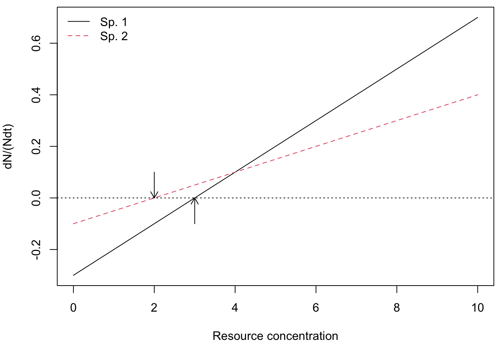
Figure 13.1: Mass-specific growth rates of two species across a range of resource concentrations. Note that where growth rates equal death rates, consumer growth is zero (arrows) and this determines each species’ \(R^*\)s.
We can calculate the equilibrium resource concentration that each species would create on its own, their \(R^*\)s. Recall that we find this by setting each species per capita growth rates to zero, and solving for \(R\).
From Fig. Figure 13.1, we see that at high resource concentrations, species 1 grows faster than species 2. However, at low resource concentrations, species 2 grows faster than species 1. Resource concentrations change as consumers take up resources, so when does the whole system reach an equilibrium?
Both species (Fig. Figure 13.1) increase in biomass as long as resources are high enough to allow growth, whereas resources will decline as consumers grow more and more and take up increasing amounts of resources. Eventually consumer biomass is high enough to drive down resources so low that mass-specific growth rate is zero. This will happen at different resource concentrations for our two species. We see that species 2 has a positive growth rate when species 1 does not (Fig. Figure 13.1). This type of resource competition for a single limiting resource was named the \(R^*\) rule (“R-star”):
In the absence of other processes, the species with the lowest \(R^*\) for the shared limiting resource will exclude all others.
We refer to this type of resource competition as \(R^*\) competition.
We can create a model to integrate the dynamics of these three components.
Now if we like, we can find \(N_2^*\) when \(R^*=d_2/(e_2a_2)\), and \(N_1 =0\). \[\frac{dR}{dt} = 0 = r\left(S-R\right) - a_2N_2R\] Substituting \(R^*\) in for \(R\) gives us this solution:
\[N^*_2 = r\left(S\frac{e_2}{d_2} - \frac{1}{a_2}\right)\] It is clear from this expression that increasing the death rate (\(d\)) will drive down \(N^*_2\). However, increasing resource turnover rate, \(r\), assimilation efficiency, \(e\), or uptake rate, \(a\), will all cause \(N_2^*\) to increase.
In the above model, per capita growth rates were linear functions of resource concentration. It is more common to see a type II functional response for the consumers (Tilman 1982) (Fig. Figure 13.2), which we described in Chapter 10. \[\frac{dN_i}{Ndt}= b_i\frac{R}{k_i + R} - d_i\]
Figure 13.2: The Monod function for per capita resource-dependent growth rates of two different populations. These are a type II functional responses.
As we saw earlier with linear mass-specific growth rates, one species will have a lower \(R^*\) than the other, and this model predicts that it will out-compete the other.
13.2 Competition for Substitutable resources
For two species, \(N_1\) and \(N_2\), competing for two shared and substitutable2 resources, \(R_1,\,R_2\), we will identify \(e_{ij}\) and \(a_{ij}\), where \(e\) is assimilation efficiency, \(a\) is feeding rate. They now have two subscripts, where \(i\) refers to the consumer species \(N_{i}\), and \(j\) refers to either resource 1 or 2 (\(R_1\), \(R_2\)). With that, we have the following relations.
2 substitutable resources are those that a species can use in partial replacement of each other.
where \(S\) is the background supply rate of a resource, and \(r(S-R)\) is the turnover rate of resources that are part of the available \(R\) pool.
The differential feeding rates, \(a_{i1}\) and \(a_{i2}\), tell us a lot about the relative requirements and limitations experienced by the two consumers. If \[a_{i1} > a_{i2}\] then, all else being equal, species \(i\) requires more \(R_1\) than \(R_2\) in the environment.
Here we create an R function for the 4-D system of ODEs.
Next we create a parameter set in which species 1 grows more with each unit of \(R_1\) and also consumes more of it than \(R_2\).
parameters <-c(# the environment supplies slightly more of resources 1r1 =1, r2=1, S1=1.8, S2=1.2, # sp 1 grows more with each unit of R1# sp 2 grows more with each unit of R2e11=.1, e12=.1, e21=.1, e22=.1,# sp 1 consumes more R1 than R2 and more than sp 2# sp 2 consumes more R2 than R1 and more than sp 1a11=2, a12=1, a21=1, a22=2, # both spp die at the same rated1=.1, d2=.1)
Initial dynamics of two species competing for two shared substitutable resources. Species 1 uses resource 1 more efficiently than it does resource 2 and also consumes more of it, per capita. Conversely, species 2 uses resource 2 more efficiently than it does resource 1 and also consumes more of it per capita.
It is
output <-cr_2subst_graph(parameters)
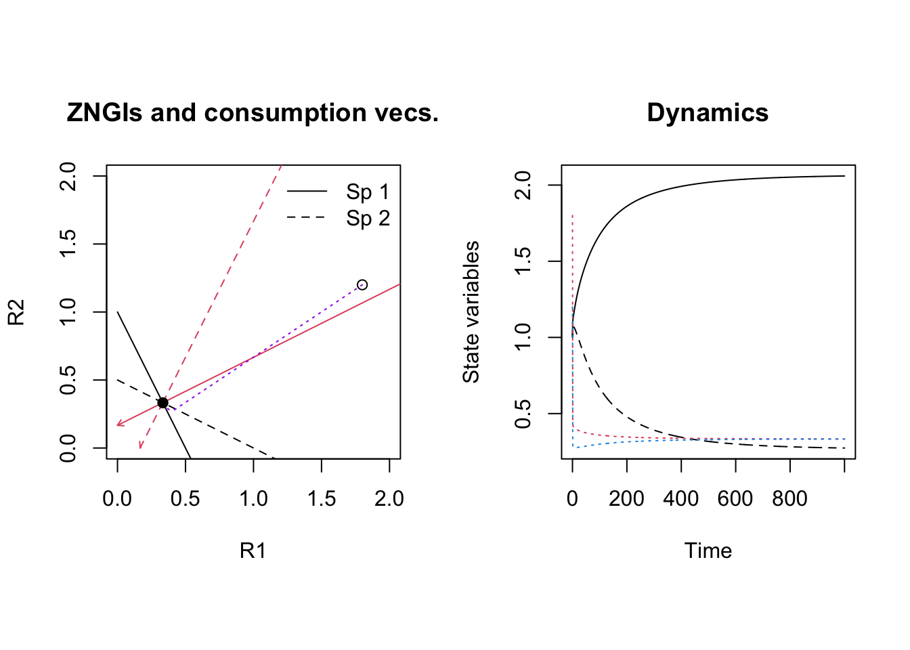
13.3 Tilman’s resource ratio with essential resources
Coefficients reflect resources 1 and 2, and species \(i\).
time R1 R2 N1 N2
100.0000000 0.1111048 0.1111048 4.9447001 4.9447001
\[R_{j}^* = \frac{k_{ji}m_i}{r_i-m_i}\]
13.4 Consumer-resource mutualism
In this section, we will model mutualisms using a framework that, unlike our Lotka-Volterra approach, is intended specifically to describe resource consumption by one or both partners (MacArthur 1972).
Sometimes mutualists share resources, as with mycorrhizal associations, where species share a resource or a product that they can acquire or manufacture in surplus and trade it for a resource or product that is limiting. This is a bi-drectional mutualism (Fig. Figure 13.3) because the flow of are bidirectional: both species provide a resource to the other (Holland and Deangelis 2010).
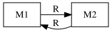
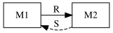
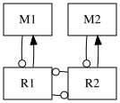
Figure 13.3: Bidirection, unidirectional, and indirect mutualisms. Normal arrowhead is a positive effect, whereas an open dot arrowhead is a negative effect. A dashed line indicates a service, and a solid line indicates a consumable resource.
In other cases, mutualists may share services, as with moray eel-grouper foraging. In this particular case, grouper and the giant moray eel have different foraging strategies, with the eel going into reef crevices and the grouper waiting outside to pick off prey that escape the eel (Bshary et al. 2006). Sometimes these mutualisms are called by-product mutualisms, in cases where there is no evidence of coordinated behavior, but nonetheless a mutualism arises via the independent activities of each species.
In the following, we explore the type of mutualism in which one species provides a resource and the other species provides a service (Fig. Figure 13.3). This is a uni-directional mutualism because the flow of resources is only unidrectional, from one species to the other (Holland and Deangelis 2010).
A good example of a uni-directional of mutualism is seed dispersal via a frugivore that disperses seeds. A plant species provides a fruit that is nutritious for an animal. A primary benefit for the plant is that seeds are carried away from the parent plant. This may help seeds escape enemies that accumulate near parent plants (Connell-Janzen hypothesis). In addition, it provides a bet hedging opportunity wherein seeds are dispersed to a variety of habitats any one of which may be better for survival than the current location. It is even possible that dispersal is directed to preferred habitat that is consistently better than under the parent plant due to better resource levels or environmental conditions (Wenny and Levey 1998). The animal benefits by consuming the fleshy part of the fruit surrounding the seed. An interesting case arises when seed predators collect seeds but do not kill them before having buried, cached, or moved seeds.
Another very important example example of this type of mutualism is pollination. Pollinators (bats, insects, birds) receive resources (nectar, pollen) and provide services (pollination, gene flow).
13.4.1 A model of uni-directional mutualism
Here we describe a model of a facultative unidirectional mutualism that uses type II foraging model for both consumption of the resource and provision of the service.
The growth equation for the plant species, \(M_1\), includes logistic growth, and has terms for the benefit it receives from its mutualist frugivore and the cost paid to that frugivore.
The plant species (\(M_1\)) grows logistically in the absence of fruit consumption or seed dispersal \(r_1 M_1\left(1-d_1M_1\right)\). Consumption of fruits are governed by a type II functional response by the frugivore \(aM_2\left(\frac{M_1}{h_1 + M_1}\right)\), so that the consumption rate of a single frugivore has an upper limit (Fig. Figure 13.4). Successful seed dispersal and establishment is also governed by a type II functional response. The success of a single seed reaches an upper limit as the number of frugivores continues to increase, \(c_1M_1\left(\frac{M_2}{h_2 + M_2}\right)\) (Fig. Figure 13.4).
ggplot(data.frame(x=c(0, 1)), aes(x=x) ) +stat_function(fun=function(x) { 10*x/(1+10*x) }) +labs( x="Fruit abundance", y="Consumption Rate of a frugivore")ggplot(data.frame(x=c(0, 1)), aes(x=x) ) +stat_function(fun=function(x) { 10*x/(1+10*x) }) +labs( x="Frugivore abundance", y="Dispersal rate of a seed")
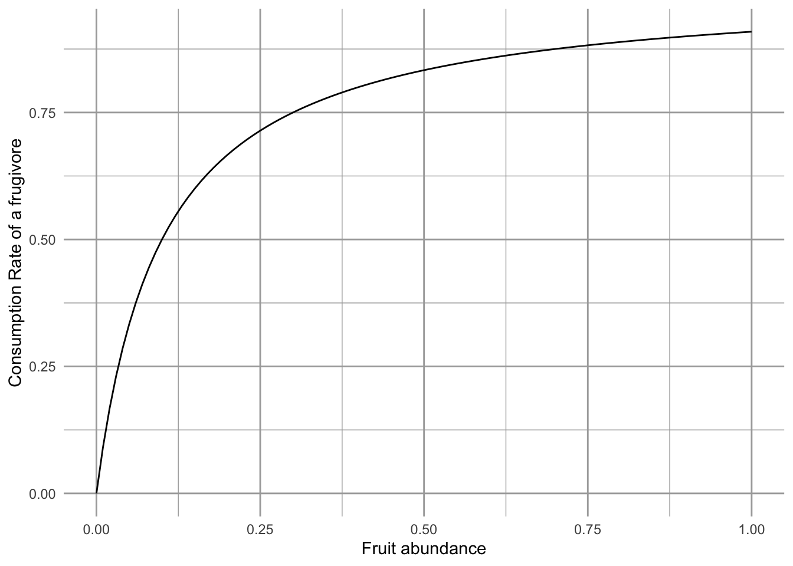
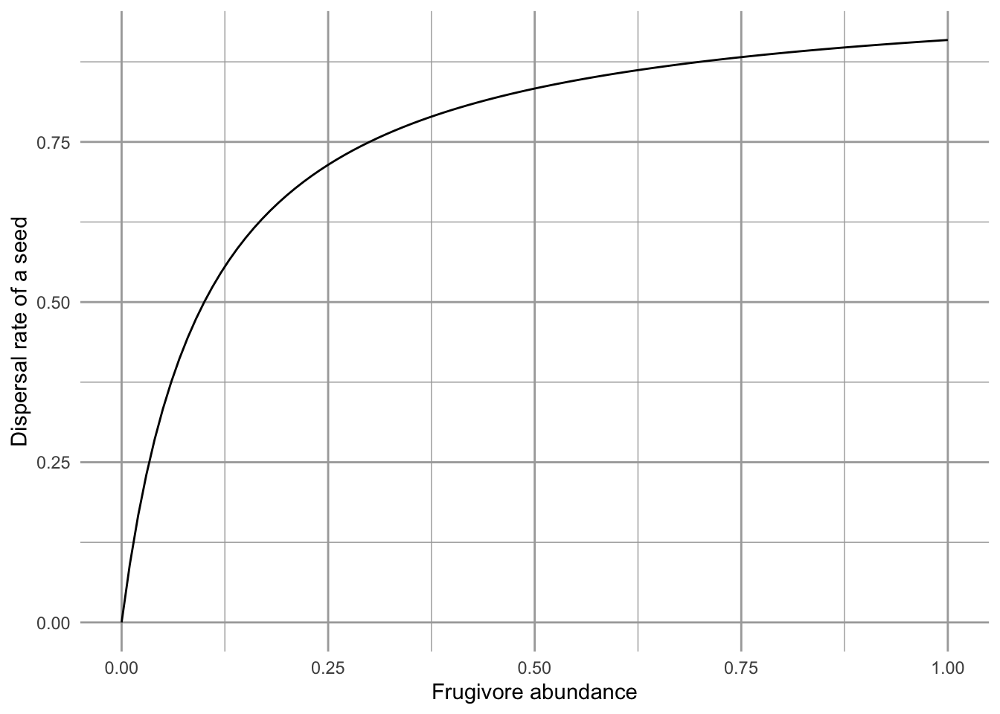
Figure 13.4: Fruit consumption by a single frugivore is governed by a type II functional response as fruit abundance increases. Successful seed dispersal and establishment is governed by a type II functional response as frugivores increase.
The growth equation for the frugivore species, \(M_2\), includes logistic growth, and one term for the benefit gained from the plant.
\[\frac{dM_2}{dt} = r_2M_2\left(1-d_2M_2\right) + eaM_2\left(\frac{M_1}{h_1+M_1}\right) \] The animal seed disperser grows logistically in in the absence of consuming this particular plant species \(r_2M_2\left(1-d_2M_2\right)\). The animal benefits from consuming the fruit which it attacks at the same rate as for \(M_1\), \(aM_2\left(\frac{M_1}{h_1+M_1}\right)\), but converts the fruit into new individuals with efficiency \(e\).
consumption > service = net predation
service > consumption = net mutualism
Here we provide code for the ODE for the complete bidirectional mutualism. When we define the parameters, we will set some of them equal to zero so that it represents a unidirectional consumer-resource mutualism.
# The derivative ## A two-species consumer-resource mutualism## Holland and DeAngelis 2009, Ecology Letters Ecology Letters, 12: 1357–1366.## The parameterization follows that in this article. It differs from those ## in the above equations. Can you see the differences?cr_bimut <-function(t,y,parameters) { M1 <- y[1] # M2 <- y[2] # with( as.list( parameters ), { dM1 <- M1 * (r1 - d1*M1 + a12*M2/(h2 + M2) - B1*M2/(e1+M1) ) dM2 <- M2 * (r2 - d2*M2 + a21*M1/(h1 + M1) - B2*M1/(e2+M2) )list( c( dM1, dM2 )) } )}
And here are the parameters, and we graph the time series.
### These parameters create a unidirectional, resource-service mutualism (B2 = 0)## Translating, a12 = a above, and a21 = ea above, and B1 = s above## therefore e = a21/a12p.u <-list(r1 =1, r2 =1, d1=0.01, d2=0.01, a12 =0.4, a21 =0.25, B1 =0.3, B2 =0, h1=0.3, h2=0.3, e1=0.3, e2=0.3)###### times seriest <-seq(0,25, by=.1)y <-c(M1=50, M2=1)out <-ode(y=y, times=t, func= cr_bimut, parms=p.u)outdf <-data.frame(out)outL <-pivot_longer(outdf, -time, names_to="State_var", values_to="N")ggplot(outL, aes(time, N, colour=State_var)) +geom_line()
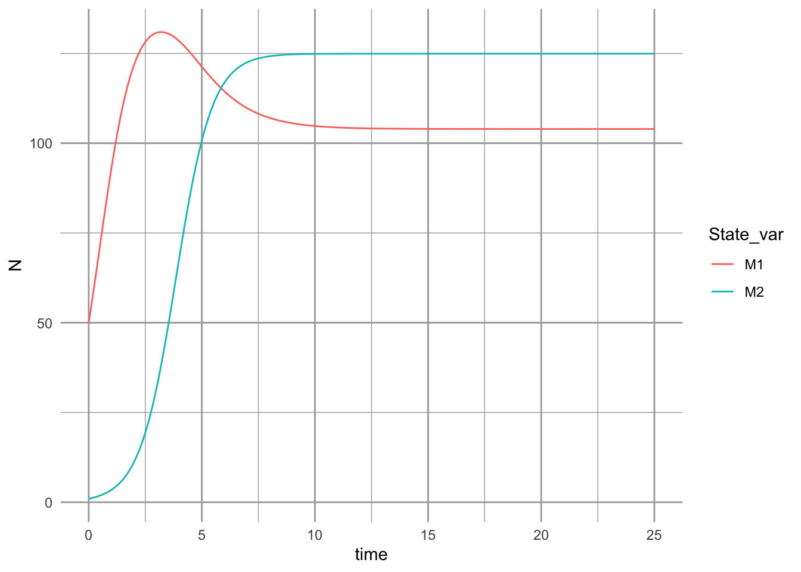
The dynamics can result in multiple basins of attraction or alternative stable states (Fig. Figure 13.5).
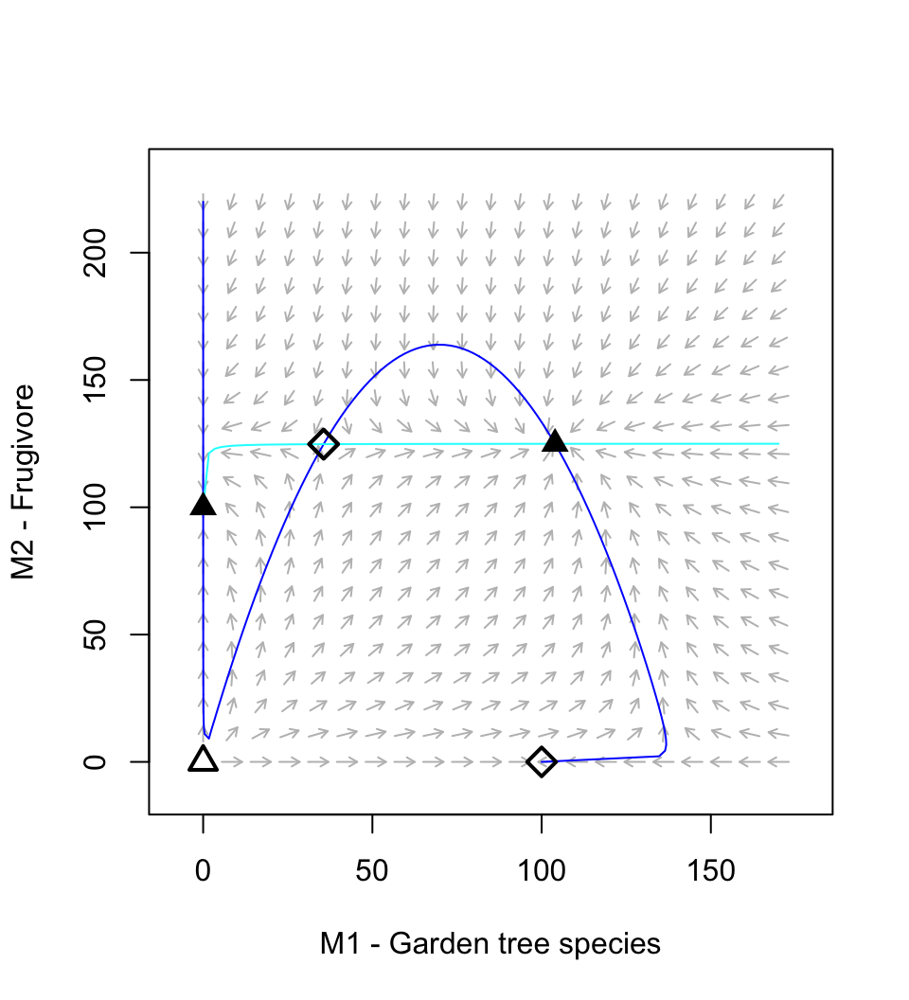
Figure 13.5: A resource-service mutualism may result in alternative stable states. If both species achieve moderate abundance, then both species increase toward a stable mutualism. However, if the frugivore is too abundant relative to the plant, then its consumption dominates the interaction and drives the equilibrium mutualism.
Holland and DeAngelis (2009) vary \(a_{21}\) between \((0.25,\ldots,\,0.4)\) to vary the relation from mutualism to predation. Try that now. Save a picture of your results.
13.5 Plant-soil feedbacks
Vascular plants form the basis of terrestrial ecosystems, and they live in intimate contact with the most diverse group of organisms on Earth–soil microbes. Ecologists have begun to focus on this intimate relationship, and Jim Bever (Bever 2003) has been one of ecologists helping lead the way (Fig. Figure 13.6).
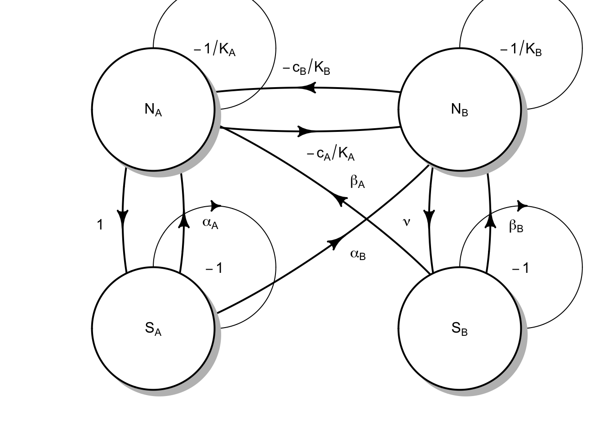
Figure 13.6: Plants and soil microbes can interact in negative or positive ways. Plants may grow more poorly with their own soil flora than with that of a competitor’s.
Fig. Figure 13.6 reflects the following Lotka-Volterra style model of plant species \(N_A\) and \(N_B\), and soil microbial floras \(S_A\) and \(S_B\): \[\begin{equation}
\frac{dN_A}{dt} = r_A N_A \left( 1 + \alpha_A S_A + \beta_A S_B -
\frac{N_A + c_B N_B}{K_A}\right)
\end{equation}\] where the effects of microbes (\(\alpha\), \(\beta\)) could be positive or negative (e.g. pathogenic). The plants each have their own carrying capacities (\(K\)), and negative effects on each other (\(c\)).
The corresponding equation for the other plant species is \[\begin{equation}
\frac{dN_B}{dt} = r_B N_B \left( 1 + \alpha_B S_A + \beta_B S_B -
\frac{c_A N_A + N_B}{K_B}\right).
\end{equation}\]
We often refer to the soil flora associated with a single plant species as its home flora, and the other as the away flora. Each microbial flora comprises many, many species and we aggregate the net effects. Bever (2003) further simplified his model by placing constraints on soil microbes, so that \(S_A + S_B=1\). This allows him to focus on the relations among microbes and plants. With these assumptions, he showed that the net effect of each flora as a single state variable for the home flora of each species: \[\frac{dS_A}{dt} = S_A(1-S_A) \left( \frac{N_A}{N_A + N_B} - \nu\frac{N_B}{N_A + N_B}\right)\] and that \[S_B=1-S_A\].
Coexistence criteria Bever states that (2003, p. 467, bottom of the second column) out that the interactions are more stable if \[\alpha_A + \beta_B < \alpha_B + \beta_A \] which means that the effects of the home floras own their home plants are less positive (or more negative) then on the other species.
Bever also argued that for either plant species to increase when rare (i.e. coexist), that the interspecific competition has to be less than the benefits of the interactions of the soil floras. However, his criterion in eqn 5 (p. 469) is not sufficient, and this is revealed by its lack of consistency with the parameter set and outcomes in Fig. 4. So, we will alter his equation a bit to reveal what probably would work. We use a particular parameterization of Lotka-Volterra interactions so that it is consistent with others (Bolker et al. 2003; Chesson 2000). We reformulate the carrying capacities and \(c_A\) and \(c_B\) as
\[\alpha_{AA}=1/K_A;\,\alpha_{BB}=K_B;\,\alpha_{BA}= c_A/K_B;\,\alpha_{AB}=c_B/K_A\] If we recall our earlier work, we showed that each species \(i\) can invade when \[\frac{\alpha_{ij}}{\alpha_{jj}} < 0\] This translates to the Lotka-Volterra invasion criterion for species A is \[\frac{\alpha_{AB}}{\alpha_{BB}} =\frac{c_b}{K_A}K_B\] The invasion criterion for species B is \[\frac{\alpha_{BA}}{\alpha_{AA}} =\frac{c_a}{K_B}K_A\] The coexistence criterion is that each species must be able to invade when rare, including when the soil flora has no effect. Therefore, we have
where both conditions on the left must be satisfied. In the numerator on the right, we have the effect of each soil flora on their away plant species. In the denominator, we have the effects of each flora on the home plant species. Thus, the fraction on the right is the relative benefit of the soil flora.
Now we will create an ODE function that will let us see the dynamics play out. We need only model one soil flora because \(S_B = 1-S_A\).
bever3 <-function(t,y,p){with(as.list(c(y,p)), { dNa <- ra * Na * (1+alphaA*SA + betaA*(1-SA) - (Na + cB*Nb)/Ka) dNb <- rb * Nb * (1+alphaB*SA + betaB*(1-SA) - (cA*Na + Nb)/Kb) dSA <- SA*(1-SA) * ( Na/(Na+Nb) - nu*Nb/(Na+Nb) )return(list(c(dNa, dNb, dSA), SB=1-SA)) }) }
We will parameterize the model in a way that reveals the importance of the soil floras to coexistence, according to criteria stated above Equation 13.1. We will create a vector of parameters, and then test whether the inequality in Equation 13.1 is true. We start with an absence of a soil flora effect.
On this basis, we should see that each species can invade when rare. Now let’s see the dynamics play out.
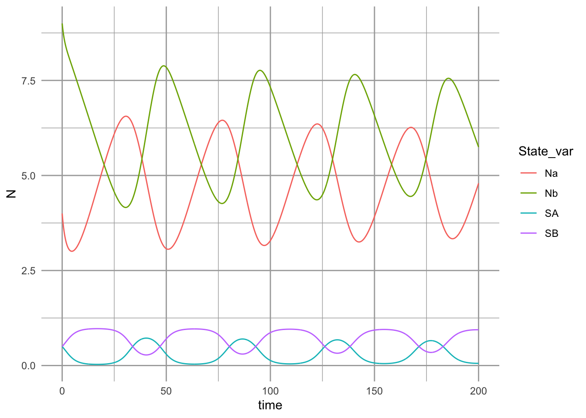
Dynamics of competing plant species, subject to self-limiting negative feedbacks with soil pathogens.
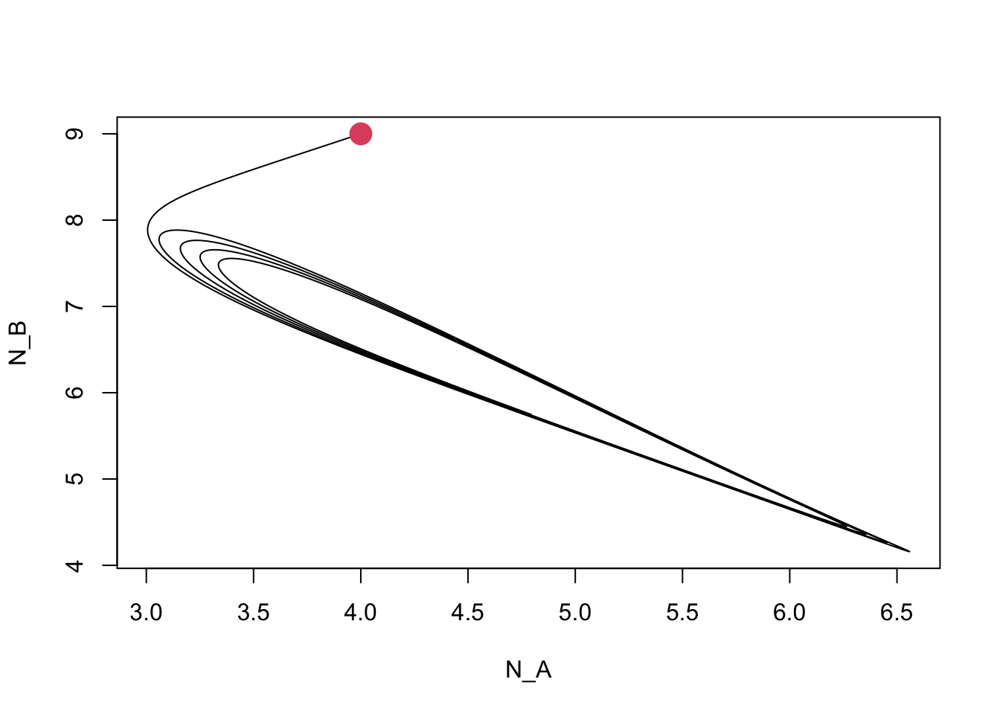
Dynamics of competing plant species, subject to self-limiting negative feedbacks with soil pathogens.
13.6 Simulations for learning
Often, we learn a lot by describing interactions in simple enough terms that we can analyze the interaction analytically, such as the way we analyzed Lotka-Volterra competition and mutualism. In more complex cases, we often cannot find an analytical, or closed form, solution, or if we do, it is so complex that it is difficult to extract meaning. In those cases, we may be able to learn a lot about the consequences of our model’s assumptions through simulation. Using simulation, we examine the observed dynamics for a wide range of parameter values and then infer general rules about how parameters or parameter combinations influence dynamics.
In this study, we will use simulations to attempt to determine rules that govern the long-term dynamics of the mutualism model with linear density dependence in both intra- and interspecific interactions. We will also use simulation to confirm our earlier analytical solution and vice versa.
13.6.1lvg()
The core of our simulations will use a general purpose Lotka-Volterra model that simpy takes an interaction matrix and \(r\) as inputs.
lvg <-function (time, n, parameters) { r <- parameters[[1]] a <- parameters[[2]] dns.dt <- r * n * (1+ (a %*% n))return(list(c(dns.dt)))}
In this model, the parameters are a list (a type of R data object) with two components. The first is a vector of r, one for each species we want to model. The second component of the list is the matrix of interaction coefficients. This matrix is square (same number of rows and columns). The elements of this matrix must have the correct sign. For instance, to represent competition, the relevant elements would have to be negative.
Here we create an interaction matrix for a two-species Lotka-Volterra mutualism, where each species suffers from intraspecific competition, and benefits from its mutualist.
a <-matrix(c( -.1, .02, .02, -.09), nrow =2, byrow=TRUE)a
[,1] [,2]
[1,] -0.10 0.02
[2,] 0.02 -0.09
Now let’s numerically integrate, or simulate, the model and plot the outcome. Comment your code to help remind you what is going on.
# Let r be the same fpor each speciesr <-c(1,1)parms <-list(r=r, a=a)parms
When we use a model to explore the consequences of our assumptions, we want to use a range of plausible assumptions. In a case like this one where we are exploring a model more than the natural phenomenon it represents, we should use a wide range of parameter values that include cases where it is likely to fail. In our case, we will hold intraspecific density dependence constant and vary interspecific interaction coefficients from zero to twice the value of intraspecific interactions.
We start with building the bits and pieces that the simulation will use, and then use a for-loop to cycle through all the parameter combinations we are interested in.
# Use expand.grid to create systematically combinations of parametersdf <-expand.grid(a11 =-0.1, a12=seq(0, .2, by =.02),a21 =seq(0, .2, by=.02), a22=-0.1 )dim(df) # The number of rows and columns
# set intrinsic rates of increase...r <-c(1,1)# and starting values...N0 <-c(N1 =10, N2=10.001)# and times for which to return output.t <-0:200# Set values that will be useful later on in our for-loop.n <-length( t +1 )npar <-nrow( df ) # create an empty data frame to hold our simulation output.output <-data.frame( t =numeric(npar), N1 =numeric( npar ), N2 =numeric( npar ) )### USE A FOR-LOOP TO INTEGRATE THE MODEL FOR EACH COMBINATION OF PARAMETERSfor( i in1:npar ) { coefs.true <-matrix( as.numeric( df[i,] ), nrow =2, byrow =TRUE)invisible(capture.output( # capture.output is a function that allows us to avoid seeing warnings...# not usually a good idea to ignore warnings!!!# but it is OK here.... lvout <-ode(N0, t, lvg, parms =list(r, coefs.true) ) ) )# hang on to only the last row of output, and # put it in the i-th row of our output data frame. last <-nrow(lvout) output[i,] <- lvout[last,]}# Combine columns of parameters and output.simdat <-cbind(df, output)
13.6.3 Checking simulation results
Let’s look for anomalous results, such as negative population sizes, or infinite or “too” large sizes.
# Do simplistic numerical summaries.summary(simdat[,5:7])
t N1 N2
Min. : 0.6931 Min. : 1.000e+01 Min. : 1.000e+01
1st Qu.: 1.5576 1st Qu.: 2.100e+01 1st Qu.: 2.100e+01
Median :200.0000 Median : 7.000e+01 Median : 7.000e+01
Mean :121.5050 Mean :3.355e+146 Mean :3.355e+146
3rd Qu.:200.0000 3rd Qu.:8.858e+145 3rd Qu.:8.858e+145
Max. :200.0000 Max. :8.187e+147 Max. :8.187e+147
If we run this, we see some strange population sizes and time was not always 200, showing that the numerical integration failed before completing. Also, \(N\) included unreasonably large values.
Let’s look for all rows in which either\(N_1\)or\(N_2\) are huge (\(> 10\,000\)).
# the vertical bar | means "or"sim.N <-subset(simdat, N1 >10000| N2 >10000)head(sim.N)
Notice also that values for \(t\) indicate that the integration couldn’t find values beyond a certain time point. Hmm. For now, let’s assume our simulation is doing what we think it is and that these results indicate a true lack of equilibrium.
What could we do to learn the emerging rules? What if we just plot the values of \(\alpha_{ij},\,\alpha_{ji}\) where \(N\) is really, really big?
ggplot(sim.N, aes(a12, a21)) +geom_point()
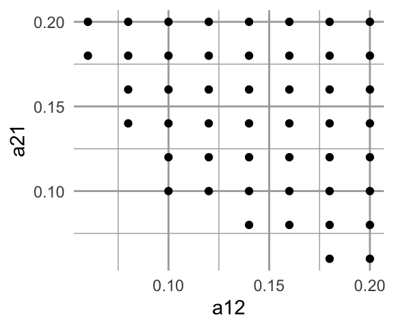
Values of \(\alpha\) when N is extraordinarily large.*
What do we learn from just this figure? Write down a possible set of conditions necessary to get these anomalous results.
13.6.4 Comparing simulation results to analytical solutions
Any time we do something novel in our modeling, we need to find a way to evaluate the novel approach to make sure it is doing what we think it is. When we have an analytical solution for our model, it is great to compare the analytical solution to the simulations.
One thing we can do is to compare the long-term steady state values we get in simulation to the analytical equilibria of this mutualism model.
First, we find analytical solutions for all of the equilibria predicted by the coefficients. Consult the equilibrium solution in the first section of the chapter. We then compare these to numerical solutions.
Here we calculate the predicted equilibria for each row of our coefficients, using the above solution.
denom <- simdat[,1] * simdat[,4] - simdat[,2] * simdat[,3]# note this solution is subtracting the negative intraspecific comp coef.# making it consistent with our equations in section 1num1 <- simdat[,2] - simdat[,4]num2 <- simdat[,3] - simdat[,1]N1.eq <- num1 / denomN2.eq <-num2 / denom# combine with simulation data setsim.check1 <-cbind(simdat, N1.eq, N2.eq)# sim.check1[order(sim.check1$a12, sim.check1$a21),]
Let’s find the subset with potential problems, such as for \(N_1\) or \(N_2\) less than than zero or really, really big (\(>10000\)).
problems1 <-subset(sim.check1, (N1 <0| N2 <0| N1 >1e4| N2 >1e4 ) )# look at the subsetggplot(problems1, aes(N1, N1.eq)) +geom_point()
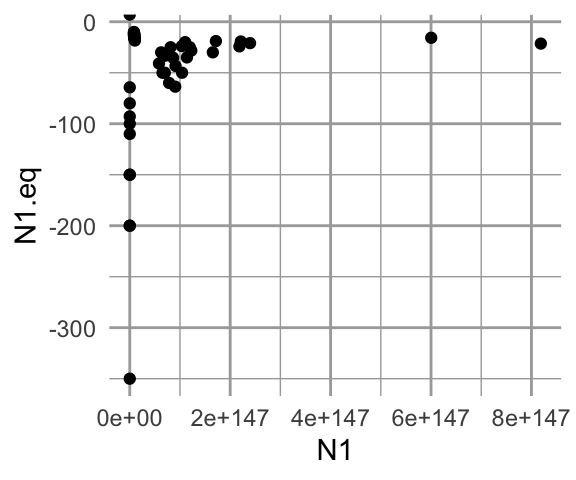
Analytically calculated predictions for \(N^*\) vs. observed simulated \(N\).
Fascinating! Both the analytical and the simulated results give us wacky, but very different results. Let’s examine the coefficients that generated these results.
What would you get for each term in the for the analytical equilibrium using the first row of data?
How do you reconcile these results?
Once we understand the anomalous results above, let’s compare the simulated and the analytical solutions for \(N_1\) and \(N_2\) both greater than zero and both less than a huge number.
Min. 1st Qu. Median Mean 3rd Qu. Max.
-2.842e-14 0.000e+00 3.553e-15 1.211e-13 7.105e-15 2.956e-12
Min. 1st Qu. Median Mean 3rd Qu. Max.
-2.842e-14 1.776e-15 3.553e-15 1.136e-13 7.105e-15 2.274e-12
These summaries show us that the differences between the analytical solutions and the numerical approximations are very, very, very small. That is a good thing. It gives us confidence that our simulations are doing what we think they are doing.
So, we can now tentatively assume that our simulations are doing what we think they are, and we could have confidence with results that we generate.
In practice, sometimes we simulate a very complex model and compare the results with a simpler, tractable analytical solution. Here, we get the hang of the approach by comparing simulations against known solutions.
13.6.5 One last thing: using the Jacobian matrix
Use eigenanalysis of the Jacobian matrix to assess the stability of these equilibria. Consult eq. 5.21 and Table 5.2 of Stevens (2009).
So, how can you digest and communicate what you have found? You should be able to answer these questions:
Did the simulation perform as you thought and how do you know?
Did the simulation confirm something we first assessed analytically? If so, how?
How do you explain the differences between the simulations and analytical equilibrium (extremely large vs. negative population sizes)?
Bever, James D. 2003. “Soil Community Feedback and the Coexistence of Competitors: Conceptual Frameworks and Empirical Tests.”New Phytologist 157 (3): 465–73.
Bolker, B M, S W Pacala, and C Neuhauser. 2003. “Spatial Dynamics in Model Plant Communities: {\Vphantom}W\vphantom{}hat Do We Really Know?”American Naturalist 162: 135–48.
Bshary, Redouan, Andrea Hohner, Karim Ait-el-Djoudi, and Hans Fricke. 2006. “Interspecific Communicative and Coordinated Hunting Between Groupers and Giant Moray Eels in the Red Sea.”PLoS Biology 4 (12): 2393–98. https://www.ncbi.nlm.nih.gov/pubmed/17147471.
Chesson, P L. 2000. “General Theory of Competitive Coexistence in Spatially-Varying Environments.”Theoretical Population Biology 58: 211–37.
Holland, J. Nathaniel, and Donald L. Deangelis. 2010. “A Consumer-Resource Approach to the Density-Dependent Population Dynamics of Mutualism.”Ecology 91 (5): 1286–95. https://www.ncbi.nlm.nih.gov/pubmed/20503862.
MacArthur, R H. 1972. Geographical Ecology: Patterns in the Distribution of Species. Harper & Row.
Tilman, D. 1982. Resource {\Vphantom}C\vphantom{}ompetition and {\Vphantom}C\vphantom{}ommunity {\Vphantom}S\vphantom{}tructure. Monographs in Population Biology. Princeton University Press.
Wenny, D G, and D J Levey. 1998. “Directed Seed Dispersal by Bellbirds in a Tropical Cloud Forest.”Proceedings of the National Academy of Sciences of the United States of America 95 (11): 6204–7. https://www.ncbi.nlm.nih.gov/pubmed/9600942.